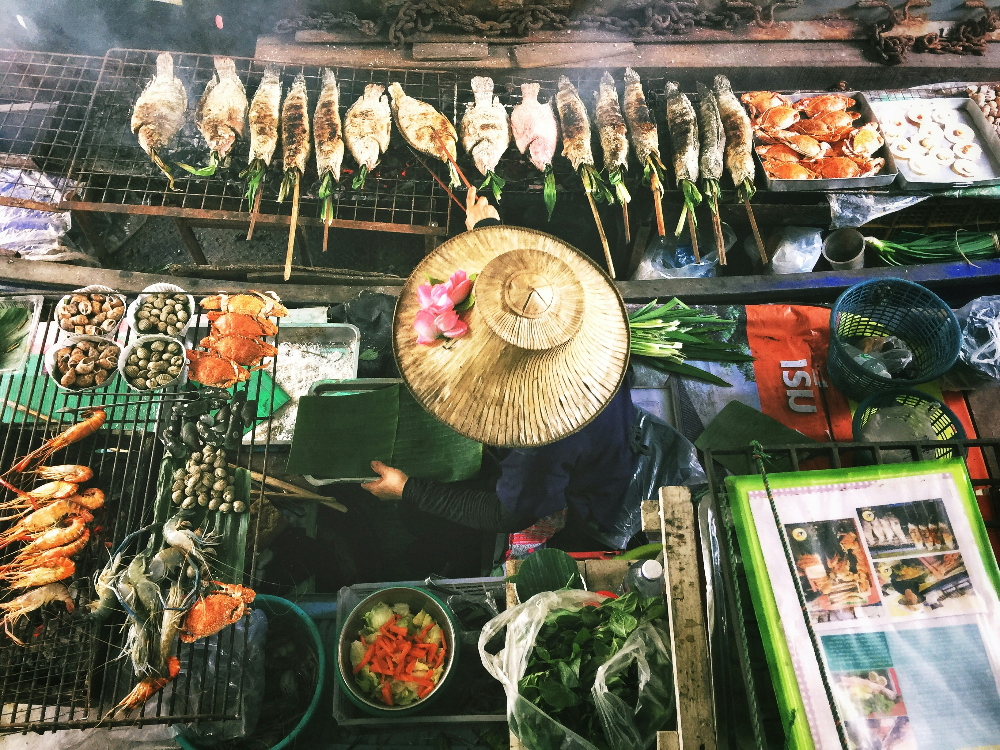
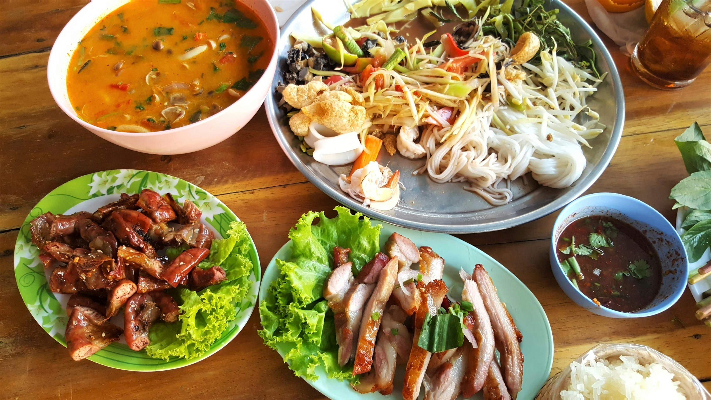
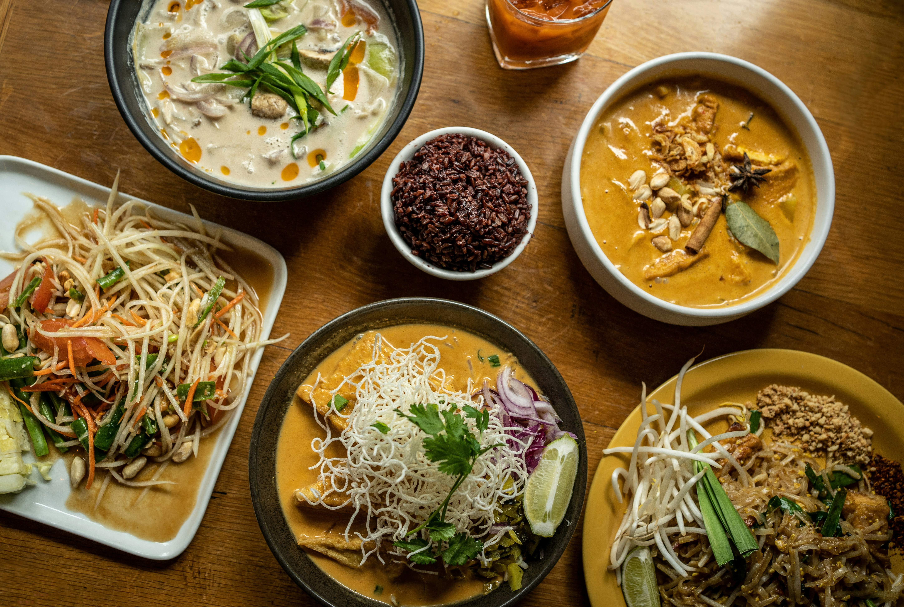

Thailändisches Essen
Würzig • Frisch • Exotisch
Die Vielfalt der Thai-Küche
In Thailand findet man überall leckeres Essen: auf Märkten, an kleinen Strassenständen oder in Restaurants.
Besonders typisch sind Reis, Nudeln, Curry, Kokosmilch, Chili, Limette und frische Kräuter.
Streetfood
Frisch gekocht, günstig und überall beliebt. Streetfood gehört zu Thailand einfach dazu.

Thai Gerichte
Besonders typisch sind Pad Thai, Curry, Suppen und gebratener Reis.

Märkte
Farben, Gerüche und exotische Spezialitäten machen Thai-Märkte besonders.

Frische Zutaten
Kräuter, Gemüse, Reis, Fisch und Kokosmilch sorgen für Geschmack.